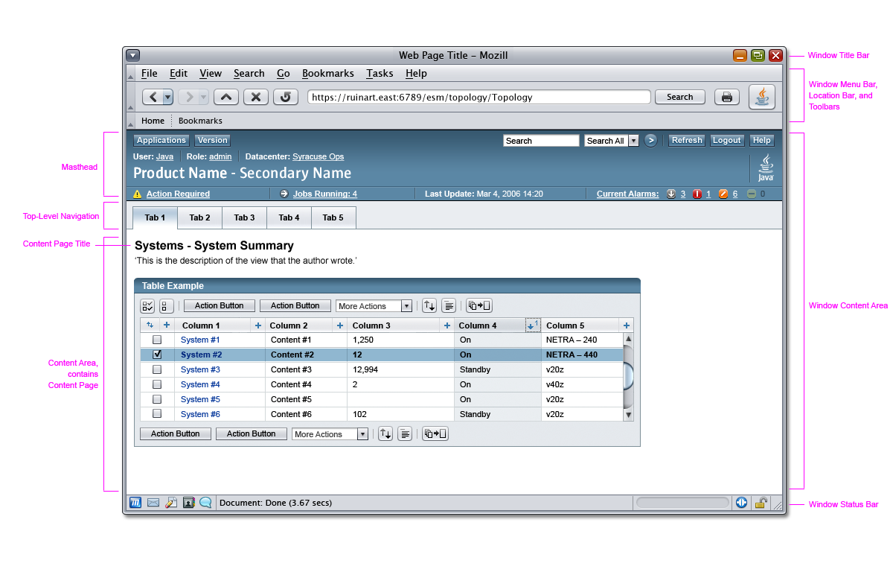

Sun Web Application Guidelines - Version 4.1
Sun Web Application Guidelines - Version 4.1
|
|
|
| [ Table of Contents | 0 Revision History | 1 Introduction | 2 Visual Design | 3 Windows and Pages | 4 Mastheads | 5 Top-Level Navigation | 6 Content Area | 7 Simple Elements | 8 Complex Elements | 9 Tables | 10 Topology | 11 Contextual Help | 12 Search | 13 Wizards | 14 Alerts and Messages | 15 Progress Indicators | 16 Alarms and Status Indicators | 17 Login Page | 18 Version Page | Appendices ] |
How To Use These Guidelines - An Introduction
3.4 Pop-up and JavaScript Windows: Advantages and Disadvantages
3.6 Masthead and Top-Level Navigation
About Revisions for Windows and Content Pages
The format for this chapter
has been revised. The new organization is a proposal for a
standard way to present subsequent chapters in the Web Application
Guidelines. Some of the changes include:
R1, R2 ...
A1, A2 ...
Comments and feedback on this proposed organization are welcome. Please click the 'Feedback' link in the masthead of any page in these guidelines to provide comments.
Web browsers display pages on the desktop in windows containing other user interface elements. This chapter presents a high-level view of windows and content pages. It includes Required and Advised usage guidelines and Implementation Tips for these elements. The following figure shows examples of the various elements discussed in this chapter. You should also refer to Chapter 5, Top-Level Navigation and Chapter 6, Content Area Structure and Layout for more detailed information, requirements, and examples.
Main Browser Window

The user interface elements in these Guidelines are defined as follows:
Main browser window: The main focus of user interaction with the product. Some products will be contained entirely in that single window, others can be augmented with pop-up windows and JavaScript windows. Browser windows are modeless: when opened, other browser windows can be operated without restriction. Every product must have a main browser window.
Pop-up window: A browser window that opens from the main browser window or another pop-up window, and appears on top of the originating window. Pop-up windows are not JavaScript windows.
Chrome: The menu bar, location bar, toolbars, and status bar are the browser window's "chrome" which can be removed. A "fully chromeless" browser window has all of its chrome suppressed when opened from another page's JavaScript code. A new window can be made chromeless at the time it is opened. Pop-up windows can always be chromeless. However, a main browser window is chromeless only if the product starts up by opening a new window or if the initial window was chromeless.
Notes:
The terms "primary window" and "secondary window" are not used in these guidelines. "Page" is used instead of "window" as the unit of information because some windows can have contents that swap between primary and secondary content.
Help windows are exempt from some of the guidelines in this chapter. Online help is designed to be a coherent whole. For more information, see Chapter 11, Contextual Help.
These Guidelines are designed to accommodate the following situations:
- Font sizes are increased by a sight-impaired user, causing text to be taller and/or wider and/or to wrap to more lines
- Lengthier text or taller characters appear due to internationalization
- Stylesheets are suppressed or replaced by a user or customer site
- Users choose to resize windows
For more information see Appendix D, Accessibility, section D-4.3.
| [ Table of Contents | 0 Revision History | 1 Introduction | 2 Visual Design | 3 Windows and Pages | 4 Mastheads | 5 Top-Level Navigation | 6 Content Area | 7 Simple Elements | 8 Complex Elements | 9 Tables | 10 Topology | 11 Contextual Help | 12 Search | 13 Wizards | 14 Alerts and Messages | 15 Progress Indicators | 16 Alarms and Status Indicators | 17 Login Page | 18 Version Page | Appendices ] |
| Privacy Policy | Terms of Use | Trademarks | Copyright 2007 Sun Microsystems, Inc. |
 Back to top
Back to top